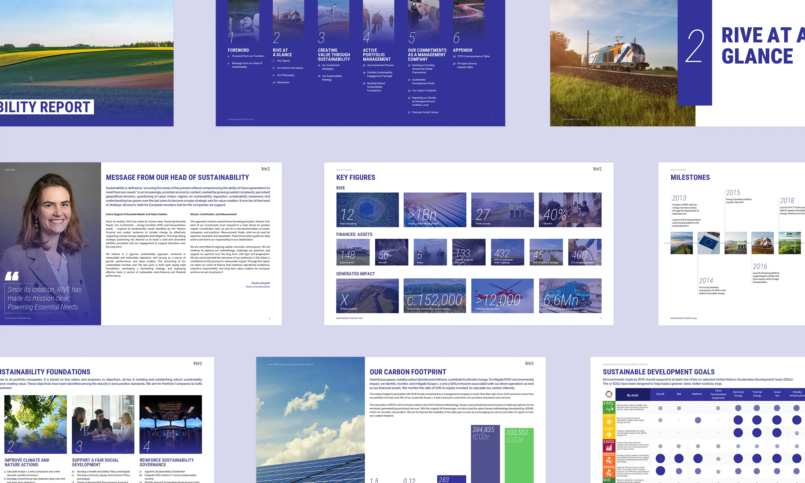

RIVE Private Investment
Mise en page
Investir aujourd'hui pour mieux construire demain
RIVE Private Investment est une société d’investissement indépendante européenne, fondée en 2013, avec des bureaux à Paris, Genève, Luxembourg et Hambourg.
Elle est spécialisée dans les investissements small à mid-cap (de 5 à 50 millions d’euros), avec un focus sur la transition énergétique et les actifs de transport. RIVE a développé une expertise sectorielle approfondie à travers plus de 100 transactions et gère plus d’1 milliard d’euros d’actifs.
Comment concevoir sans charte graphique ?
Chaque année en France, beaucoup (trop) de rapports ESG sont encore peu agréables à lire. Mais avec RIVE Private Investment, c’est tout l’inverse : je leur ai conçu une mise en page claire, belle et structurée !
De plus, concevoir ce document a permis à RIVE d’obtenir une base graphique pour tous ces supports de communication, l’entreprise ne possédant pas de charte graphique.
Découvrir le rapport ESG 2024 de RIVE
Année
Mai 2025
Read in English 🇬🇧